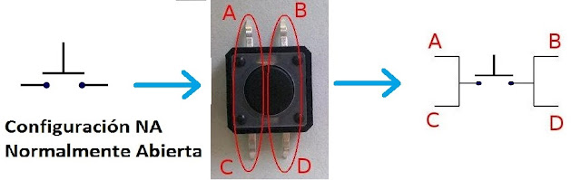
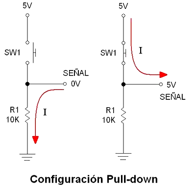
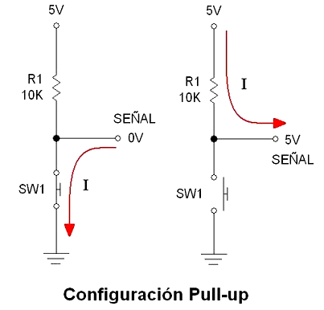

¡Saludos, equipo! En nuestra misión anterior, le enseñamos al Arduino a "hablar" usando un LED. Ahora, vamos a darle "oídos" para que pueda escucharnos. Le enseñaremos a recibir órdenes del mundo real a través de un pulsador (o botón).
Hoy dejaremos de ser solo programadores para convertirnos en usuarios. Haremos que nuestro circuito reaccione a nuestras acciones.
🌟 El Protagonista de Hoy: El Pulsador Táctil
Un pulsador es uno de los sensores más sencillos y útiles que existen. Su trabajo es simple: cerrar o abrir un camino para la electricidad cuando lo presionas.
- Estado NORMAL: Cuando no lo presionas, el camino está abierto. La electricidad no puede pasar. Es como un puente levadizo que está levantado.
- Estado PRESIONADO: Cuando lo presionas, el camino se cierra. La electricidad puede fluir a través de él. El puente levadizo ha bajado, permitiendo el paso.


🔌 El Circuito: Un Botón para Controlar un LED
Vamos a construir un circuito donde al presionar un botón, se encienda un LED.
Componentes Necesarios:
| Cant. | Componente |
|---|---|
| 1 | Placa Arduino UNO |
| 1 | Protoboard |
| 1 | LED (cualquier color) |
| 1 | Resistencia de 220Ω (el guardaespaldas del LED) |
| 1 | Pulsador táctil (Push Button) |
| Varios | Cables Jumper |
📝 Instrucciones de Conexión:
Circuito del LED (ya lo conoces):
- Conecta una resistencia de
220Ωal Pin 13. - Conecta el otro extremo de la resistencia a la pata larga (
+) del LED. - Conecta la pata corta (
-) del LED a GND.
Circuito del Botón (usando PULL-UP interno):
- Coloca el pulsador en la protoboard (cruzando el canal central).
- Conecta una pata del botón al Pin Digital 2 del Arduino.
- Conecta la pata diagonalmente opuesta del botón a GND. ¡Así de fácil!
⚡ Diagrama de armado

💡 Conceptos Clave: ¿Está Presionado o No?
El Ruido Eléctrico (Estado Flotante)
Aquí viene un concepto súper importante en la electrónica. Si solo conectamos el pin de Arduino al botón, cuando el botón no está presionado, el pin queda "flotando". No está conectado ni a 5V ni a GND.
Imagina que le preguntas a un amigo: "¿Vienes a la fiesta? Responde SÍ o NO". Si se queda callado, ¿qué significa? No sabes la respuesta. Para un pin de Arduino, ese silencio es ruido eléctrico. Puede interpretar cualquier cosa, ¡un 1, un 0, un 1, un 0! A esto se le llama estado flotante.
Necesitamos asegurarnos de que el pin SIEMPRE tenga una respuesta clara: o es un HIGH (5V) o es un LOW (0V). Para eso, usamos a nuestras viejas amigas: las resistencias.
La Solución: Las Resistencias Pull-Up y Pull-Down
Estas resistencias son como "anclas". Amarran el pin a un estado seguro (HIGH o LOW) cuando el botón no está presionado, evitando que quede flotando.
1. Configuración PULL-DOWN (La más intuitiva):
- ¿Qué hace?: "Ancla" el pin a GND (0V) a través de una resistencia.
- En estado normal: El pin lee
LOW(0V). - Cuando presionas el botón: El pin se conecta directamente a 5V. Como la electricidad prefiere el camino fácil (sin resistencia), el pin lee
HIGH(5V). - En resumen: LOW por defecto, HIGH cuando presionas.

2. Configuración PULL-UP (La que usa Arduino internamente):
- ¿Qué hace?: "Ancla" el pin a 5V a través de una resistencia.
- En estado normal: El pin lee
HIGH(5V). - Cuando presionas el botón: El pin se conecta directamente a GND, el camino más fácil. El pin lee
LOW(0V). - En resumen: HIGH por defecto, LOW cuando presionas. ¡Funciona al revés!

¡Buenas noticias! Arduino tiene resistencias de Pull-up internas que podemos activar por software. ¡Así nos ahorramos un componente en la protoboard! Hoy usaremos esa.
🧠 El Código: Leyendo el Botón
Este código le dirá al Arduino cómo "escuchar" al botón en el Pin 2 y cómo "hablar" con el LED en el Pin 13.
/*
* Misión 02: Escuchando al Mundo - Controlar un LED con un Pulsador
* Descripción: Al presionar el botón, el LED se enciende.
* Usaremos la resistencia PULL-UP interna de Arduino.
* Por: Profe Campos
* CECyTEM 05 Guacamayas
*/
// --- ZONA DE CONFIGURACIÓN ---
// Aquí declaramos variables para no usar "números mágicos" en el código.
// Es una buena práctica para que tu código sea más fácil de leer y modificar.
int pinBoton = 2; // El pin donde conectamos el botón.
int pinLed = 13; // El pin donde está nuestro LED.
// Esta variable guardará el estado del botón (si está presionado o no).
int estadoBoton = 0;
// El bloque setup() se ejecuta UNA SOLA VEZ.
void setup() {
// Configuramos el pin del LED como una SALIDA.
pinMode(pinLed, OUTPUT);
// Configuramos el pin del botón como una ENTRADA con la resistencia PULL-UP interna activada.
// ¡Esto nos ahorra poner una resistencia externa!
pinMode(pinBoton, INPUT_PULLUP);
}
// El bloque loop() se repite infinitamente.
void loop() {
// 1. LEEMOS el estado del pin del botón.
// La función digitalRead() nos dice si el pin está recibiendo una señal HIGH o LOW.
estadoBoton = digitalRead(pinBoton);
// 2. TOMAMOS UNA DECISIÓN con la estructura "if/else" (Si/Si no).
// Recordatorio: con PULL-UP, el pin es LOW cuando se presiona.
if (estadoBoton == LOW) {
// Si la condición es VERDADERA (el botón está presionado)...
// ...entonces encendemos el LED.
digitalWrite(pinLed, HIGH);
} else {
// Si no (si la condición es FALSA, el botón no está presionado)...
// ...entonces apagamos el LED.
digitalWrite(pinLed, LOW);
}
// El loop vuelve a empezar, leyendo y decidiendo una y otra vez, muy rápido.
}
🚀 ¡Inténtalo Tú Mismo! (Retos)
- 🔄 Modo Inverso: ¿Puedes hacer que el LED esté encendido por defecto y se apague SOLO cuando presionas el botón? (Pista: solo tienes que invertir la lógica en el if/else).
- 🚨 Botón de Pánico: Añade un buzzer al circuito y haz que, al presionar el botón, el LED parpadee rápidamente y el buzzer suene.
¡Misión cumplida! Ahora tu Arduino no solo habla, sino que también escucha. Has aprendido uno de los conceptos más importantes: cómo recibir una señal del mundo exterior de forma fiable.
¡Sigue experimentando! - Profe Campos